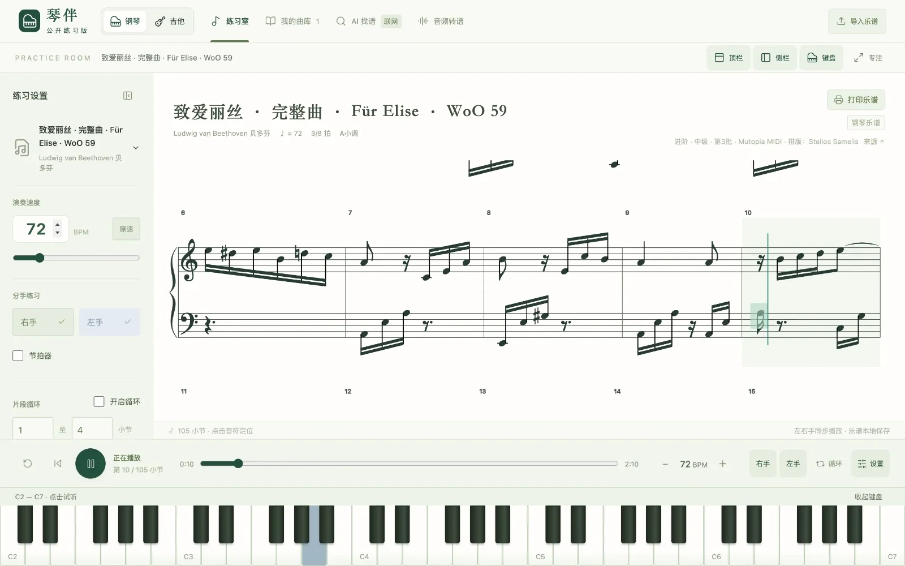
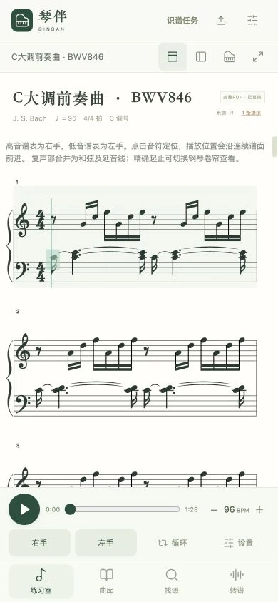
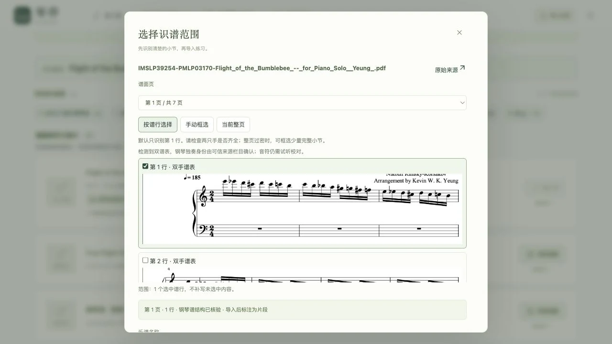
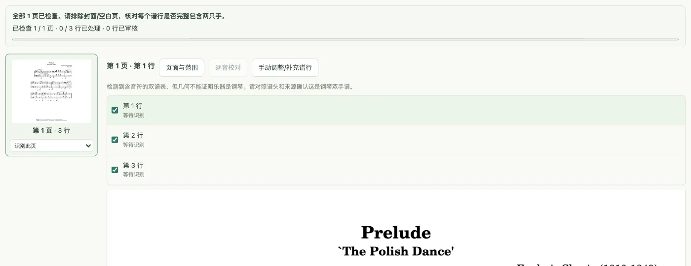
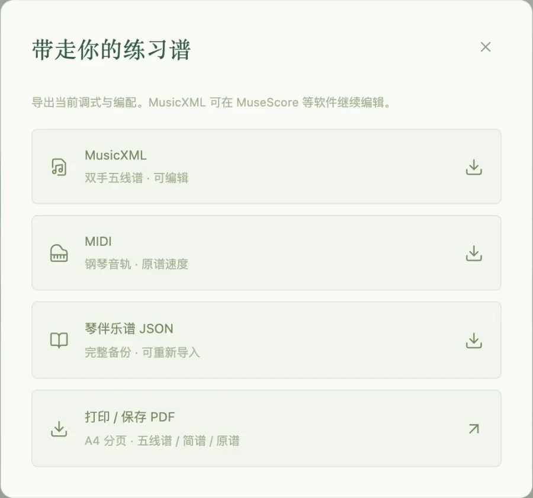
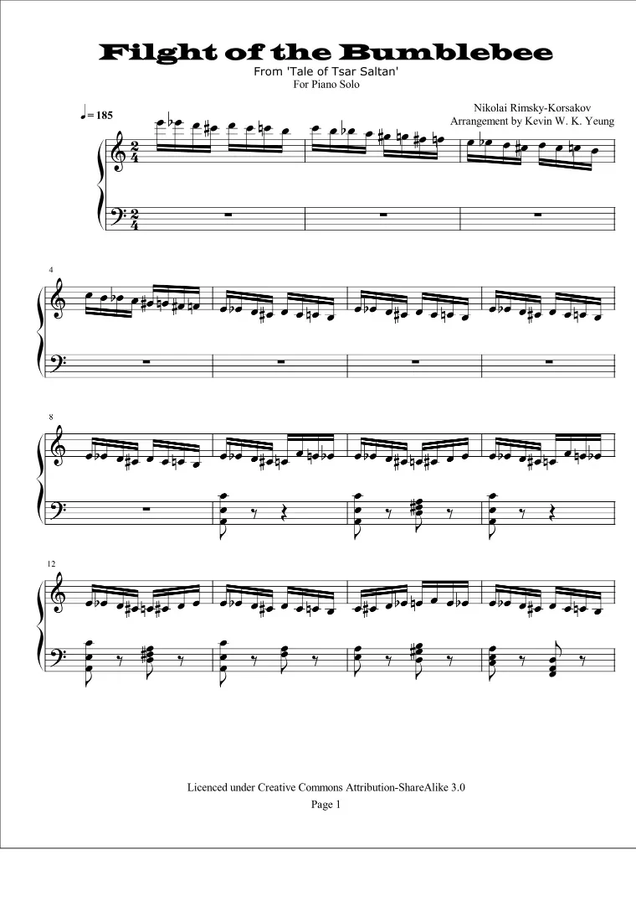
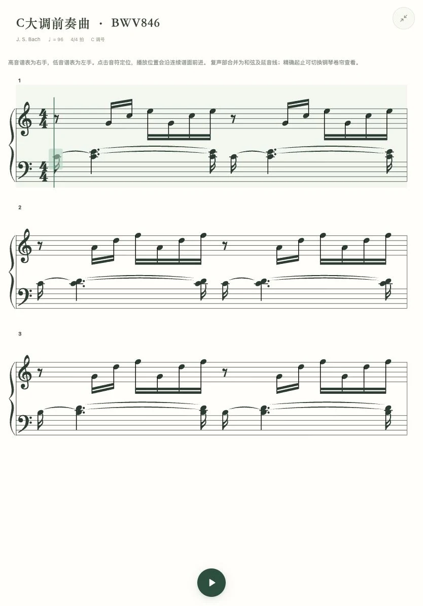
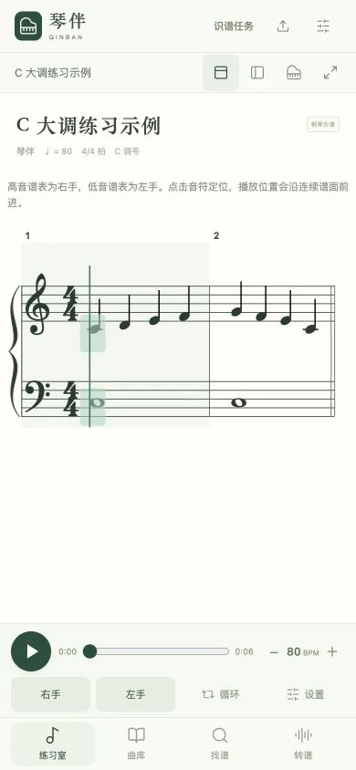

编辑与改编
修改单音的音高、时值、落点与演奏手，或把所选音符替换为同一时刻、同一只手的和弦。所有改动可撤销、重做，首次保存另存为修改版，原乐谱保留。
大三小三属七大七小七减三挂四
m. 1序 · Prelude
钢琴练习室Piano Practice Room
拍下一页谱，
马上听它、练它、改它。
钢琴乐谱与练习 App。图片 / PDF 识谱成数字谱；五线谱、简谱、钢琴卷帘同步播放；20–300 BPM 变速，左右手分开，按小节循环。
网页版为基础版 · 图片 / PDF 识谱与联网找谱需本机服务


实机截图 · 《致爱丽丝》WoO 59 / 手机端 BWV 846
变速范围。播放中改速保留当前拍位，只改练习速度，不改写曲谱原速。
五线谱、简谱、钢琴卷帘，共享音高、时间轴与左右手数据。
联网找谱并行查询 IMSLP、Mutopia、GitHub 公开 MIDI、DuckDuckGo、搜狗、Internet Archive、Bing。
《野蜂飞舞》7 页全谱，直接读取原矢量 PDF 转写，第二套独立脚本复算全部音高。
m. 5识谱 · Recognition
From a page of paper to a score you can practise.
右上角「导入乐谱 → 上传本地乐谱」，图片或 PDF（最大 50 MB、200 页）。已经是数字谱的，直接导入 MusicXML、MXL、MIDI 或琴伴 JSON。
逐页检测谱行并显示全部页面缩略图；可补框漏检的行、调整裁切，并明确排除封面或空白页。
两条五线谱组成一个双手系统，两手共用小节边界与时间轴；缺手或裁切关系不明时，停止完整提交。
校对界面并排显示原谱与识别结果，可改音高、起拍、时值、左右手与声部。全部谱行人工确认后，才导入曲库播放、跟谱。


m. 13找谱 · Find the Score
Seven public sources, searched side by side.
Hummelflug · Le vol du bourdon · Полёт шмеля
示意：输入中文曲名，同时检索原名与别名。别名只用于查真实谱源，不生成音乐。
「可直接导入的乐谱」排在前面；已解析验证的 MIDI 会显示音符数。点「直接导入练习」，就能打开五线谱、简谱并播放。版本浏览器可按格式、来源渠道筛选，并保留原站链接。
支持常见古典作品的中外文曲名对照；各渠道分别显示有结果、受限、无匹配或连接错误，某个渠道失败不会阻断其他渠道。
m. 21练习 · Practice
Staff · Jianpu · Piano roll — one timeline.
五线谱、简谱与钢琴卷帘共享同一条音符时间线，播放位置、高亮与点击定位始终落在同一个音上。下面是页面内排版的小示范，可以真的播放。
拖动或直接输入整数，回车生效。
任一只手单独静音，分手练习。
选定起止小节，反复播放这一段。
按半音升降，播放与五线谱位置同步改变。
1 拇指 … 5 小指，可开关，打印沿用。
只保留乐谱与播放键；iPad 竖屏默认专注。
fol.实机截图 · Real screens
一行内多个小节首尾相接，每行起点才出现谱号、调号；点哪个音就从哪里播，播放时谱面自动跟随。
m. 29键盘 · Keys
Touch a key and it is written on the staff.
练习室底部是 C2–C7 的钢琴键盘，点击试听，播放时当前音会在键盘上亮起。琴伴默认使用「醇厚三角钢琴」音色，基于 Salamander Grand Piano 的真实录音采样。
鼠标滑过琴键，音符会写在谱上；点击琴键发声（同时开启声音）。
钢琴使用 Salamander Grand Piano 的 30 个真实 MP3 录音采样（A0–C8，约 2.01 MB），最近根音移调覆盖 88 键；小提琴、弦乐来自 VSCO 2 Community Edition（CC0）。各型号预设是基于同一采样的方向调音，不是对应型号原琴采样，也不承诺精确复刻。
m. 37改编与导出 · Edit & Export
Rewrite it, print it, take it with you.
修改单音的音高、时值、落点与演奏手，或把所选音符替换为同一时刻、同一只手的和弦。所有改动可撤销、重做，首次保存另存为修改版，原乐谱保留。
大三小三属七大七小七减三挂四
pp–ff 力度与 0–100% 自定义力度；重音、强重音，断奏、保持音，颤音，上下波音，上下行琶音。力度与重音改变实际发声力度，不额外调用识谱模型。
pp–ff重音断奏颤音波音琶音
音符旁可显示小指法数字：1 拇指、2 食指、3 中指、4 无名指、5 小指；已有指法优先，其余为规则建议。整首可按同主音大调 / 自然小调转换，视图转换与规则改编均不调用 AI。
A4 纵向分页，PDF 在浏览器本地生成，不依赖服务器。标题与署名可自定义，字体可选宋体 / 黑体 / 楷体；五线谱符号可选 Bravura、Gonville、Petaluma；谱面可选经典黑白、现代简约、暖色手稿。
♯导出 · Export
导出 MusicXML、双轨 MIDI、琴伴 JSON，或打印为 PDF。MusicXML 与 JSON 可保留保存的指法和逐音演奏设置；MIDI 不携带指法。

m. 45曲库 · Library
A private library, with backups and revision history.
「我的曲库」统一本机磁盘与网页 IndexedDB 两种存储，支持完整备份、恢复和修订历史；备份包含已保存的原文件与原谱图片。首次打开默认进入内置的「C 大调练习示例」，更多曲目从云端曲库搜索下载。

Kevin W. K. Yeung 编配 · CC BY-SA 3.0Yeung 钢琴独奏版，7 页全谱。转写直接读取原 PDF 的矢量音头、谱线、符杆与记号，不使用其他版本 MIDI 补曲；第二套独立脚本复算全部音高，核对 488 个临时升降号、7 次换谱号、4 处 8va。
两批共 20 首 Mutopia 初级至初级进阶曲目，另有 20 首进阶曲目：巴赫二部创意曲 8 首、贝多芬作品或奏鸣曲乐章 8 首、肖邦前奏曲 4 首，附原始 PDF / MIDI / LilyPond 与逐曲授权。搜索关键词即可查看；吉他分区另有 8 首入门曲目。
巴赫 BWV 846 两页 PDF：全部 12 行、35 小节、617 颗书写音头，合并为 549 个播放事件；逐行校对后的结果与发布者同版本 MIDI 的音高、起点、时值逐个一致。此证据说明流程可用，不代表任意 PDF 都能自动零错。
m. 53版本 · Editions
What is live today, and what is still being prepared.
GitHub Pages 纯静态基础版：内置曲库、五线谱 / 简谱、播放、编辑、变速、分手、循环、移调、导出，以及 MusicXML / MXL / MIDI / JSON 导入。图片 / PDF 识谱与联网找谱需本机服务，页面会提示。
dns0129.github.io/Open_Piano_Player/app ↗保留原有图片 / PDF 识谱、识谱任务与设置、找谱、导入、编辑、播放和本机曲库。macOS 双击「启动琴伴.command」，在菜单中选 1；需要 Node.js ≥ 22.19。服务仅监听 127.0.0.1，未发布公网服务。
登录、私有曲库、原谱上传、后台识谱、每人每月任务数、全站成本上限、反馈与运营。正式 PostgreSQL、SMTP、HTTPS 和付费模型接入尚未配置；模型凭据未配置时识谱默认关闭，账号、上传和练习仍可使用。
SwiftUI / WKWebView 工程与 StoreKit 2 购买、恢复接口已就绪，服务端验单、续订与退款通知、账号删除流程已加入。开发者账号、正式商品、签名和线上服务配置后才能真实购买与提交审核；目前没有手机安装包。


m. 61边界 · Honest notes
What Qinban does not claim.
识谱要校对。AI 识谱需对照原谱与试听逐行确认；结构检查并不保证每个音高正确，未校对草稿的标记会一直保留。
不作曲，不补页。琴伴不会凭记忆编写原曲，也不会用其他版本填补缺失的页；部分来源只提供预览时，会标明预览，不冒充整曲。
音频转谱暂未开放。现有入口只检查文件能力，不会上传文件，也不会生成音符或曲谱。
暂无评弹。尚未接入麦克风评弹或 MIDI 键盘自动评分。
吉他分区是第一版。暂不开放 PDF / 图片识谱及音频转谱；品位由实际音高自动建议，不代表原谱指法。